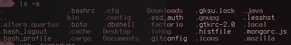
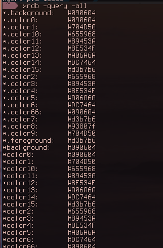

Aesthetics + Workflow =


Philosophy
- Lightweight
- Visually Appealing
- "Productive"
- Mouse-less?
DE, DM, WM? what?
- Desktop Environment
- Display Manager
- Window Manager
- Compositor
A brief overview of the graphics stack
- X Session
- X Client (Application)
- X Server
- X11 (Protocol)
- Drivers
Rising star... Wayland

Comparing DES

GNOME 3 - GTK+

KDE Plasma 5 - Qt

Xfce - GTK+

Comparing WMs
- Tiling
- Stacking
- Dynamic
i3wm

bspwm

openbox

Configuration
Dotfiles - Save and share them!
- Creating a git repository in your HOME directory
- .gitignore - with '*' and '!.gitignore'
- Wrapping git command - beav.es/ZJr 
The .Xresources file
- xrdb -query all
- Hooks into most applications with some configuration

Specific configurations & neat software
Compositors
- Combine seperate buffers into a single image
- transparency, rendering, etc
- Compton
Qt & GTK+
- oomox
- /usr/share/themes and ~/.themes
- .config/gtk/settings.ini - gtk-theme-name
- qt5-styleplugins
Conky
- "Light-weight system monitor"
- Basically, monitors anything on your system.

bars
- lemonbar
- polybar
- i3bar

Fonts!
- font awesome
- powerlines
- gucharmap
- other icon fonts
Dynamic Menus
- dmenu
- rofi
Customizing your firefox
- ~/.mozilla/firefox/[PROFILE].default/userChrome.css
My Experiences
Potential Issues
- You are never "done"
- workflow learning curves
- Compatibility - especially for tiling WMs